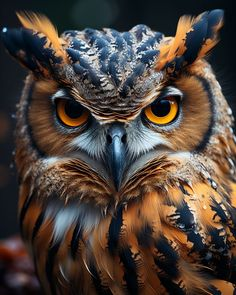
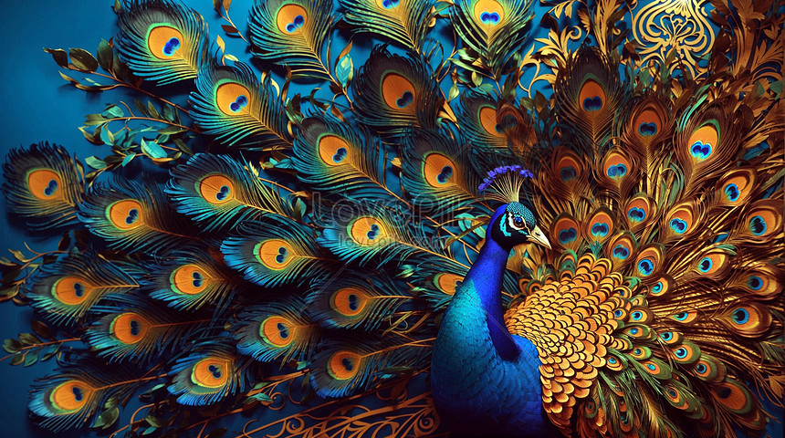
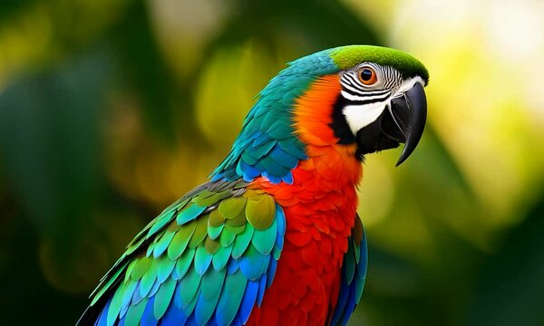
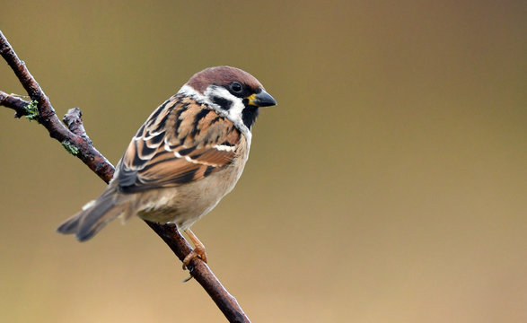

OWL
Owls are nocturnal birds of prey known for their sharp vision, silent flight, and ability to rotate their heads up to 270 degrees. Belonging to the order Strigiformes, there are over 200 species of owls worldwide, ranging from small owlets to large species like the Great Horned Owl. They have forward-facing eyes, giving them excellent depth perception, and their asymmetrical ears help locate prey in the dark. Owls primarily feed on small mammals, insects, and other birds, using their powerful talons and sharp beaks. They are also symbols of wisdom in many cultures. Fun Fact: Their feathers are specially adapted for silent flight!
PEACOCK
The peacock is a large, colorful bird known for its strikingly vibrant plumage. Native to South Asia, peacocks are a type of pheasant and are most famous for the male's iridescent tail feathers, which fan out in a spectacular display to attract mates. These feathers feature eye-like patterns in shades of blue, green, and gold. Peacocks symbolize beauty, grace, and pride in various cultures and are often associated with royalty and divinity. They are omnivorous, feeding on seeds, insects, and small creatures. The female, called a peahen, is less colorful but equally important in their elegant courtship rituals.


KINGFISHER
The kingfisher is a brightly colored bird known for its striking plumage, sharp beak, and excellent fishing skills. Found worldwide, especially near rivers, lakes, and coastal regions, these birds typically have vibrant blue, green, and orange feathers. Kingfishers are small to medium-sized, with short tails, large heads, and long, pointed beaks designed for catching fish and small aquatic prey. They are skilled hunters, often diving swiftly into water to catch fish. Kingfishers are also symbolic in many cultures, often associated with peace, prosperity, and calmness due to their serene hunting style and vibrant appearance.
PARROT
A parrot is a brightly colored bird known for its intelligence, playful behavior, and ability to mimic human speech. Belonging to the family Psittacidae, parrots are typically found in tropical and subtropical regions. They have curved beaks, strong legs, and zygodactyl feet (two toes pointing forward and two backward) that help them grasp objects and climb. Parrots are highly social, often forming flocks in the wild, and are herbivorous, feeding on seeds, fruits, and nuts. Popular as pets, species like the African Grey and Macaws are especially admired for their communication skills and vibrant plumage.


SPARROW
The sparrow is a small, social bird found worldwide, belonging to the Passeridae family. These birds are typically brown and gray with short, stout beaks adapted for seed-eating, though they also eat insects. Sparrows are known for their chirping calls and are often seen in urban areas, farms, and gardens. The house sparrow (Passer domesticus) is one of the most common species. Sparrows build nests in crevices, trees, or man-made structures and are highly adaptable to various environments. Despite their resilience, some sparrow populations are declining due to habitat loss and pollution.
WOODPECKER
A woodpecker is a type of bird known for its ability to peck at wood using its strong, pointed beak. Found worldwide, they primarily inhabit forests and wooded areas. Woodpeckers peck to find insects for food, create nests in tree trunks, and communicate with other birds. Their specialized skull absorbs shock from constant pecking, and their long, sticky tongues help extract insects from deep crevices. These birds play an essential ecological role by controlling pests and creating nesting cavities used by other wildlife. Common species include the Downy Woodpecker and Pileated Woodpecker.

PIGEONS
Pigeons are birds belonging to the Columbidae family, commonly found worldwide. Known for their stout bodies, short necks, and small heads, they come in various colors, often featuring shades of gray, white, or brown. Pigeons are highly adaptable and thrive in urban areas, feeding on seeds, grains, and scraps. They have excellent navigation skills, often traveling long distances to find their way home, which has made them useful as messenger birds throughout history. Pigeons are also symbols of peace and love in many cultures.